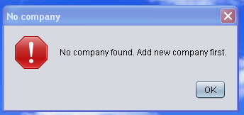

Project Information
&
User Manual
Second Year Computing Project
2011/2012
Fully Automated Payroll System
Design & Development Team:
James Madden: X00086390:
Project Manager, Customer Liaison, Software and Database Development, System Testing & Quality Control.
Shane Murphy: X00085315:
System Design, Software and Database Development, System Testing & Quality Control.
Maciej Macierzynski: X00086366:
System Design, Software and Database Development, System Testing & Quality Control.
About This Software Package:
This “Payroll” software package has been designed and developed with simplicity and ease of usability in mind. It is typically aimed at the SME and the self employed whom, in the majority of cases will not possess the accounting or payroll skills to ensure compliance with current legislation. After completing the installation and company set up procedures on the system which also involves setting “Username and Passwords”. With the above points in mind, once the employee’s have been set up on the system, the system will accept timesheet entries for each employee directly on the screen and from there will calculate the weekly wages for each employee, printing off a payslip for each employee while at the same time generating a weekly report outlining the total weekly cost of the payroll to the employer for the current week, this report may be printed out or viewed from the reports page. At the end of each month a “Form P30” report can be generated and used to complete the revenue’s “Form P30” issued by the revenue. At the end of each year a “Form P35” can be generated and again used to complete the revenue’s “Form P35” also issued by the revenue. “Form P45” available from revenue and “P60” available as a template from the revenue website as a download can also be generated when required.When an employee leaves the company, the finish date on the employee details screen shall be highlighted in red and will not be editable.
Installation:
The software package will be supplied on a CD. To install the software on your system insert the CD into the disc drive on your system, Select “Start” from the bottom task bar, select “My Computer” from the dropdown start menu, double click on “DVD-RAM Drive(D:)” double click “Setup” file and follow the on screen instructions.Help:
The software will be supplied with a hard copy of the user manual, however an online user manual shall also be available by selecting “Help” on the menu bar at the top of the screen, when “Help” is selected a dropdown box shall appear, select “User Manual” and this will open the user manual at the topic relevant to the screen you are working in.
Top Menu Bar
Company Setup:
To launch the Payroll System double click on the Icon on your desk top. Following installation the first time you launch the program you will be presented with the message “No Company Found. Add New Company First” this is expected! This message is displayed because at this stage you have not set up a company in the system. You must now select “OK” this takes you to the default main screen, you must now set up a company in the system, to do this select “Company” from the top Task Bar and select “Add Company” from the dropdown box, the user will be presented with the window “Required Details”
Main Page Company Details

Company Details Screen
The user must now enter the company details and select “OK” The user will be presented with a user login screen, this is where the user sets-up the “Username” and “Password” for future login to the system.

User Login Setup Screen
Select “OK” to continue, a welcome message will be displayed, select “OK” to continue.

Welcome Screen
Delete Company:
If a user needs to delete a company the user must select “Company” from the menu bar at the top of the screen and select “Delete Company” then select “OK”.
Confirm Delete Screen
At this stage of the process no employee’s have been set up on the system and a “No Employee” message will be displayed, select “OK” to continue To setup new employee’s proceed to Add New Employee’s section.
System Log In:
Upon launching the application, the user is presented with a login screen.
User Login Screen
To continue with log in, the user must enter a valid username and password, to complete the log in the user must click OK". Each input text field is labeled ‘Username’ and ‘Password’ for each respective input required. The ‘Cancel’ button allows the user to close the application at any time. Once a valid username and password are entered, the ‘OK’ button can be clicked which will then present a welcome message.
Login Welcome
To advance to the next screen select “OK”. The system permits the user 3 attempts to complete the login process, if the user fails to enter a valid username and password after 3 attempts, the system exits.
Login Errors:
In the event a user incorrectly enters login details, an error message will be displayed. The error message will indicate whether no login details have been entered or an invalid username or password has been entered, prompting the user to enter a valid username or password.Invalid Username or Password:
An error message is displayed if the username or password, do not match those stored in the database.No details Entered:
If the user leaves either or both the username and password fields empty, an error message is displayed to the user.Employee Details:
After the system accepts the valid username and password and validates the login, the user is presented with the Employee Details screen. This is the default page of the application. From here the user can navigate through the application using the tabs at the top of the page.
Main Page Employee Details
The main function of this page is to provide access to employee details, to add an employee, to update an employee or to end an employment. An individual employee can be selected from the dropdown box at the top of the page or employees may be searched by the “previous” or “next” buttons at the bottom of the page.

No Employee's Message
Add New Employee:
To add a new employee select the “Add New Employee” button at the bottom of the page, the user will be presented with a new window “New Employee Details”,
New Employee Details
The user must enter the new employee details then select “OK”. The user can select “Cancel” at anytime to exit this screen. Once the “OK” button has been selected the new employee will be set up in the system and a unique employee number will be automatically assigned to the added employee. Timesheets and Reports can now be created for the new employee. The system will check all input fields for the correct data format and range’s, in the event of incorrect data format or incorrect data range’s being entered the system will issue an error on screen and request that correct data formats and or range’s be entered.
Updating Employee Details:
To update an employee’s details, first the employee to be updated must be selected from the ‘Select Employee dropdown box at the top of the page or by using the “Next” or “Previous” buttons at the bottom of the page. The displayed employee details can now be edited and updated to the most recent available information by filling in or editing the fields. Fields available to be edited here are as follows:- Surname
- First name
- Address
- Phone Number
- E-mail Address
- Date of Birth
- PPSN
- Department
- Employee Rate Type
- Employee Rate
- Payment Method
- Band Name
- Account Number
- Sort Code
- PRSI
- Cutoff Point
- Tax Credit
- Employee Number
- Assigned automatically when employee is created
- Start Date
- Set when employee is created
- Finish Date
- Set when the employment ends

Update Employee Message
The system will check all input fields for the correct data format and range’s, in the event of incorrect data format or incorrect data range’s being entered the system will issue an error on screen and request that correct data formats and or range’s be entered.
Terminating Employment:
To terminate an employee’s employment with the company, select the employee from the dropdown box at the top of the page and click the “Cease Employment button”. Clicking this button presents the user with a dialog box where the termination date is entered. Select “OK” to complete the action. Terminated employees may not be edited and a termination may not be undone. Select “Cancel” to abort the termination process. The user may select the “Exit” button to exit the payroll system at anytime.
Finish Date
The finish date is highlighted in red on the employee details screen as shown below.

Highlighted Finish Date
Highlighted Finish Date
Timesheets:
When the timesheet tab is selected, the timesheet is displayed on the screen. The user can select employee by employee number from the dropdown box at the top of the page or form the “Previous” or “Next” button at the bottom of the page, the week number may also be selected by the forward and backward buttons on either side of the week number display box. Once the appropriate employee has been selected, the employee start and finish times for each day may be selected, any additional expenses being claimed by the employee will be entered in the expenses input box, when all entries have been made the user can select the “Calculate” button which will then calculate the employee’s wages displaying Gross Pay, PAYE, PRSI, USC, Expenses and Nett Pay in the display panel on the right. When timesheet entries and payments have been approved, the user selects the “Submit” button which then records the payment.
Empty Timesheet

Completed Timesheet
Note: Only when the timesheet has been submitted (recorded to the database) can a payslip be printed from the reports screen.
Reports:
Selecting the “Reports” tab allows the user access to the various reports listed below by selecting the radial button at the side of each report name.• Weekly Report – This is the total “payroll cost” to the employer
• P30 – Monthly returns to revenue
• P35 – Annual returns to revenue
• P60 – Annual earnings/PAYE/PRSI/USC to the employee
• P45 – Employment cessation form for employee/revenue/social welfare.

Reports Screen
The reports are then displayed in the text box at the right hand side as shown below.

Selected Report Screen
Selected Report Screen
Error Messages:
The following messages are displayed when confirmation is required or errors are detected.
Confirm Message
Select “Yes” to confirm or “No” to reject.

Week Out Of Range Message
The user must select “OK” to continue and must enter a week number between 1 and 52 inclusive.

Invalid Date Message
The wrong date format has been entered; the user must select “OK” and enter the date in the format indicated.

Incorrect PPS No Format Message
The user must select “OK” and enter the PPS number in the correct format, seven digits and one letter as indicated.

Invalid Email Message
The user must select “OK” and enter a valid email address.

Input Value Too Long Message
The user must select “OK” and enter a first name and surname, each less than 30 characters long.

Empty Fields Message
The user must select “OK” and ensure data has been entered into all fields.

Invalid Details Message
The user must select “OK” and enter a valid “Username and or Password”
No Employee Message
The user must select “OK” and then select “Add Employee” from the menu bar at the bottom of the Employee Details screen.

No Company Message
The user must select “OK” and then select “Add Company” from the menu bar at the top of the Employee Details screen.
No Company Message
The user must select “OK” and then select “Add Company” from the menu bar at the top of the Employee Details screen.